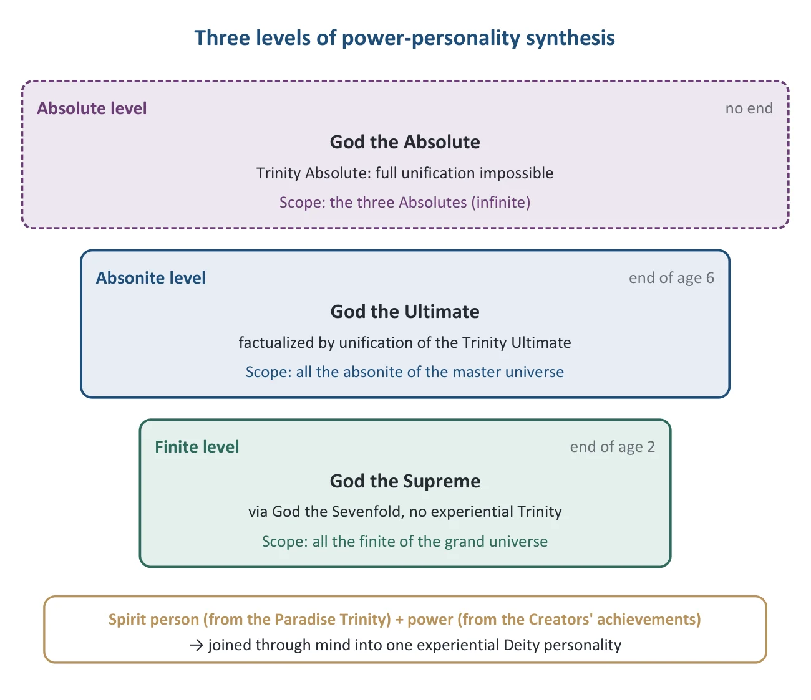

La synthèse personnalité-pouvoir
Original : Annexe XXII, La synthèse personnalité-pouvoir (p. 445–474)
DANS CE CHAPITRE
Le Livre d’Urantia dit à maintes reprises que les Déités expérientielles « personnalisent le pouvoir ». Sadler traite cela comme une loi fondamentale de la croissance du maitre univers et l’analyse. Sa réponse est que, dans l’éternité, Dieu n’a pas synthétisé en une unité toute la réalité actuelle, mais a laissé cette tâche aux Déités expérientielles. La synthèse a lieu sur trois niveaux, fini, absonite et absolu ; elle s’accomplit sur les deux premiers, mais ne peut jamais être achevée sur le niveau absolu.
1. Le sens des mots : personnalité et pouvoir (orig., p. 445–447)
La synthèse personnalité-pouvoir est le processus qui unit le pouvoir et la personnalité. Mais qu’est-ce qui est uni à quoi, exactement ? Comme la révélation donne au « pouvoir » et à la « personnalité » des sens qui diffèrent de ceux du dictionnaire, il faut d’abord clarifier ces mots.
Sur la personnalité, le texte offre une description plutôt qu’une définition. La personnalité est un mystère non résolu et une révélation de Dieu ; Dieu est personnalité et il est volonté. Au-dessous du niveau absolu, la personnalité est relativement libre de toute causalité antécédente ; elle n’a pas d’identité propre, mais elle unifie l’identité d’un système d’énergie vivant. Sadler en conclut que la personnalité est distincte des trois énergies que sont l’esprit, le mental et la matière. Ces énergies peuvent s’exprimer à la fois en qualité et en quantité, mais la personnalité ne peut s’exprimer qu’en qualité.
L’analogie de Sadler est la couleur rouge. Personne n’a jamais vu la rougeur à l’état isolé ; ce que nous voyons est toujours une chose rouge. La personnalité, de même, n’apparait jamais à l’état isolé ; nous connaissons toujours quelqu’un. Pourtant, de même que la rougeur détermine entièrement la couleur d’un objet, la personnalité pénètre et gouverne l’être tout entier dans lequel elle se trouve.
Sur le pouvoir, le texte en parle en rapport avec le Suprême.
Sous l’impulsion directrice de l’Être Suprême évoluant, toute la réalité finie de l’espace-temps est engagée dans une mobilisation toujours ascendante et une unification en voie de perfectionnement (synthèse personnalité-pouvoir) de toutes les phases et valeurs de la réalité finie0:7.10
Dans le domaine physique, le « pouvoir d’univers » désigne le stade où l’énergie est passée sous un contrôle intelligent. Sadler suppose que le mental et l’esprit ont des stades de maturité comparables, et il réserve le sens le plus plein du mot pouvoir aux trois énergies telles qu’elles sont gouvernées par les Créateurs Suprêmes et intégrées dans le Tout-Puissant. En bref, la synthèse personnalité-pouvoir signifie l’union de l’énergie organisée (physique, mentale et spirituelle) avec la personnalité.
2. Pourquoi la synthèse a lieu (orig., p. 447–451)
En quête d’une réponse, Sadler remonte dans l’éternité passée et place côte à côte deux récits : l’histoire de l’actuel et l’histoire du potentiel.
L’histoire de l’actuel
Le point de départ est l’unité absolue de la nature de Dieu. Quand le Père s’est exprimé dans le Fils Originel, l’Ile du Paradis est apparue comme une sorte de contrepartie, et la réalité actuelle s’est divisée entre le Fils personnel et spirituel et le Paradis non personnel et non spirituel. Même ainsi, au Paradis, l’énergie d’esprit et la monota ne se distinguent que par le nom ; elles ne font qu’un. C’est le signe que les deux étaient à l’origine une seule réalité.
Une tension surgit entre ces deux directions divergentes de la réalité, et le Père et le Fils agissent ensemble ; l’Esprit Infini et l’univers central apparaissent. L’Esprit Infini est la source du mental, et le mental coordonne la matière et l’esprit. Ce que Sadler souligne, c’est ce qui ne s’est pas produit à ce moment-là. L’Acteur Conjoint coordonne le Fils et le Paradis, mais ne les synthétise pas. Au lieu de lier en une unité toute la réalité actuelle, Dieu établit thèse après thèse de Déité. Le Père est la thèse première, le Fils la thèse non qualifiée, l’Esprit la thèse conjointe et la Trinité la thèse indivise. Les thèses s’ajoutent aux thèses ; la tension n’est pas résolue, mais s’accroit au contraire. Le Paradis demeure seul.
L’histoire du potentiel
Le récit du côté de la potentialité commence de la même manière. La présence du Père au-delà de Havona est cachée dans les potentiels de l’infinité, détenus du côté de la Déité par l’Absolu de Déité et du côté de la non-Déité par l’Absolu Non Qualifié, deux expressions exactement opposées. Mais ici les histoires se séparent. Du côté potentiel, les deux sont parfaitement unifiés.
Sur les niveaux subinfinis, ils sont fonctionnellement différenciés, mais, dans l’infinité, ils sont UN.0:11.15

La conclusion de Sadler est la suivante. Ce qui s’est produit du côté actuel n’a pas été une synthèse de toute la réalité actuelle, mais l’unification de toute la réalité actuelle de Déité, à savoir la Trinité du Paradis. La tâche d’unifier la totalité de la réalité actuelle a été transmise aux Déités expérientielles : Dieu le Suprême, Dieu l’Ultime et Dieu l’Absolu. Tel est, selon lui, l’arrière-plan éternel du défi qui consiste, après Havona, à synthétiser le pouvoir et la personnalité. Cette interprétation est une inférence originale de Sadler, tissée à partir de nombreuses affirmations du texte.
3. Le défi de la synthèse et ses trois niveaux (orig., p. 452–454)
Selon Sadler, un achèvement final de la révélation de Dieu exigerait que l’Absolu Non Qualifié soit entièrement matérialisé dans une création infinie, que l’Absolu de Déité émerge pleinement comme Dieu l’Absolu, une « personne absolue expérientielle », et que les deux soient complètement unifiés expérientiellement. Cela dépasse la pensée. Existentiellement, les trois Absolus sont déjà un dans l’Absolu Universel, mais réaliser cette unité expérientiellement demanderait une autre éternité.
Ce qui est impossible sur le niveau absolu est possible sur les niveaux subabsolus : d’abord la totalité du fini est pouvoir-personnalisée, puis la totalité de l’absonite. Pourquoi exactement trois niveaux ? Selon le texte, la Trinité du Paradis est existentielle en actualité, tandis que ses potentiels sont tous expérientiels [0:12.2]. Par rapport au fini, la Trinité fonctionne comme Trinité de Suprématie, par rapport à l’absonite comme Trinité de l’Ultimité, et absolument comme Déité Totale. C’est pourquoi il y a trois Déités expérientielles.
Ces trois Déités expérientielles étaient potentielles dans la Trinité existentielle, la Trinité du Paradis. Mais leur émergence dans l’univers comme personnalités de pouvoir dépend, pour une part, de leur propre fonctionnement expérientiel dans les univers de pouvoir et de personnalité, et, pour une autre part, des accomplissements expérientiels des Créateurs et des Trinités postérieurs à Havona.0:12.4
Sadler y voit une sorte de réaction en chaine. Parce que les Déités expérientielles étaient latentes dans la Trinité, elles doivent devenir factuelles ; parce que les Déités expérientielles évoluent, des Trinités expérientielles doivent apparaitre. Toute activité divine sur le niveau fini est pouvoir-personnalisée en Dieu le Suprême et unifiée impersonnellement dans l’Ultime Trinité. Toute activité divine sur le niveau absonite est pouvoir-personnalisée en Dieu l’Ultime et unifiée impersonnellement dans l’Absolu Trinité.
4. La synthèse sur le niveau fini : l’Être Suprême (orig., p. 455–461)
Une synthèse sans Trinité
Avant la Suprématie, il n’y a pas de Trinité expérientielle. L’Être Suprême lui-même doit être membre de la première Trinité expérientielle, si bien que cette Trinité ne peut devenir factuelle avant que sa croissance soit achevée. La Trinité du Paradis ne peut pas non plus « s’unifier » à nouveau pour expérientialiser le Suprême, puisqu’elle est déjà, et depuis toujours, absolument unifiée. Ce que la Trinité du Paradis a fait en réalité, c’est faire naitre la personne spirituelle de Dieu le Suprême, et cette personne spirituelle devient le foyer volitif de toute l’unification finie de la personnalité et du pouvoir.
Qu’est-ce donc qui fait croitre le Suprême ? L’interaction des trois groupes au sein de Dieu le Septuple : les Créateurs Suprêmes, l’Être Suprême et les Déités du Paradis. Les succès que les créateurs remportent dans le temps et l’espace sont rassemblés dans le pouvoir du Tout-Puissant, et ce pouvoir s’unit à la personnalité spirituelle dans Havona.
L’évolution du Tout-Puissant pouvoir de Suprématie par diverses synthèses de divinité dans les univers évoluants se traduisit par une nouvelle présence de pouvoir de la Déité, qui se coordonna avec la personne spirituelle du Suprême dans Havona au moyen du Mental Suprême.56:6.2
Sadler note que cette union se produit sur le monde-pilote du circuit extérieur de Havona, et que son intermédiaire est le Mental Suprême, dérivé de l’Esprit Infini. Si, dans l’éternité, le mental a « coordonné » le Fils et le Paradis, dans le temps le mental « synthétise » le pouvoir et la personnalité.
Des phases ni spirituelles ni personnelles
Pourtant, Dieu le Septuple n’est pas simplement une association. Il a aussi d’autres phases sans rapport avec le progrès spirituel et personnel, et chacune d’elles doit trouver son unité dans le Suprême [106:1.4]. Sadler cite les sept Maitres Contrôleurs et la « phase mentale » de Dieu le Septuple qu’il a conjecturée dans l’annexe XII. Son image est celle de nombreux courants qui convergent vers la personne spirituelle du Suprême : depuis les Fils Créateurs, depuis les contrôleurs physiques, et peut-être le long d’une voie mentale qui passe par les Esprits Créatifs et les Maitres Esprits jusqu’à Majeston.
Le résultat est une nouvelle relation entre modèle et personne.
Quant aux Déités évoluantes du Suprême et de l’Ultime, nous constatons que certaines de leurs phases impersonnelles s’unissent actuellement avec leurs contreparties volitives, et qu’en conséquence, une nouvelle relation se développe entre l’archétype et la personne.118:9.7
L’Ile du Paradis est le mécanisme absolu, et le Fils Éternel est la personne absolue. Les deux sont coordonnés par le mental de l’Acteur Conjoint, mais ne sont jamais devenus un. Au sein d’une Déité expérientielle, en revanche, la matière, le mental et l’esprit sont tous en train d’être unis à la personnalité. Ce qui ne s’est pas accompli dans l’éternité est en train de se produire dans le temps.
La divergence des énergies et la part du Suprême
Sadler relie cette synthèse à la « divergence » des trois énergies. Au Paradis, l’esprit et la monota ne diffèrent que par le nom ; dans Havona, ils sont distincts, mais harmonieux. Dans les sept superunivers, un large fossé s’ouvre entre l’énergie cosmique et l’esprit divin [116:6.7]. Ce fossé engendre d’innombrables problèmes et disharmonies, et ces problèmes deviennent des occasions, pour les créatures comme pour les créateurs, d’accumuler de l’expérience dans l’harmonisation. Plus le défi est grand, plus la croissance est grande.
L’Être Suprême n’est pas seulement du côté de celui qui reçoit dans ce processus.
Dieu le Suprême est lui-même un participant volitif et créateur de l’actualisation de sa propre déité.117:3.7
Il remplit maintenant expérientiellement les niveaux potentiel, associatif et créatif que la Déité du Paradis remplit existentiellement.
5. La divinité du Paradis enrichit la réalité expérientielle (orig., p. 462–465)
Nous considérons ensuite la « personne spirituelle » qui descend d’en haut. Le Suprême et l’Ultime ont tous deux une origine dans le temps, et tous deux commencent comme des êtres spirituels dans Havona. Dieu le Suprême a son origine dans la Trinité du Paradis, et l’Ultime est lui aussi présent dans Havona au sens absonite et superpersonnel [106:4.3]. Sadler en déduit que ce que la Trinité fait pour le Suprême sur le niveau fini, elle le fait aussi pour l’Ultime sur le niveau absonite. La Trinité est à la fois la source des deux Déités expérientielles et la réalité de stabilité absolue qui soutient leur évolution.
Sadler considère aussi le septuple non seulement comme une échelle descendante, mais comme une « diversification latérale ». La Déité existentielle, d’abord une, se ramifie dans les Sept Maitres Esprits (divergence), puis se rassemble à nouveau dans l’Être Suprême (convergence) pour former une nouvelle unité, une Déité expérientielle ; c’est le principe de divergence-convergence de l’annexe XIV. Ni le Suprême ni l’Ultime ne sont donc la Trinité elle-même ; chacun est un reflet de l’unité de la Trinité sur son propre niveau.
Le Suprême est l’unification de la Trinité comprise par les êtres finis. L’Ultime est l’unification de la Trinité du Paradis comprise par les êtres absonites.0:9.2
Cet enrichissement ne se produit pas seulement sur les niveaux de la Déité. La divinité du Paradis descend, atténuée et diluée, de manière à pouvoir être saisie aussi sur les niveaux relatifs. Les effusions d’un Fils Créateur unissent expérientiellement le créateur et la créature, et l’Ajusteur fusionne la divinité existentielle avec l’humanité expérientielle. Le texte compare la relation de l’Ajusteur avec l’homme à la relation de la Trinité avec le Suprême.
Les Moniteurs de Mystère sont, pour les êtres humains, ce qu’est la Trinité du Paradis pour l’Être Suprême.116:3.4
Quand un être humain fusionne avec un Ajusteur, quand un Fils Créateur devient semblable à ses propres créatures, quand le Suprême et l’Ultime personnalisent le pouvoir, un seul principe est à l’œuvre sur des niveaux différents. La croissance spirituelle en nous est un petit miroir de la synthèse cosmique personnalité-pouvoir.
6. La synthèse sur le niveau absonite : Dieu l’Ultime (orig., p. 466–473)
Avant l’émergence du Suprême
Avant que la Suprématie n’émerge, le maitre univers est gouverné existentiellement par la Trinité de l’Ultimité, tandis que, sur le plan expérientiel, sa supervision est partagée entre quatre.
1. Des Absolus quant au potentiel. 2. De l’Ultime quant à la direction. 3. Du Suprême quant à la coordination évolutionnaire. 4. Des Architectes du Maitre Univers quant à l’administration antérieure à l’apparition de chefs spécifiques.12:6.9–12
La Déité expérientielle de cette période est « prépersonnelle », et le Père, le Fils et l’Esprit collaborent avec elle non pas personnellement, mais en tant que Trinité [10:7.3]. Pendant ce temps, les Maitres Architectes, un corps complet dès le commencement, administrent à l’avance le maitre univers tout entier.
Après l’émergence du Suprême
Une fois que l’Être Suprême a émergé, quatre facteurs nouveaux entrent dans le niveau absonite. Premièrement, l’Ultime Trinité peut prendre forme comme réalité factuelle. Deuxièmement, l’Être Suprême commence une troisième phase de fonction, en tant que Déité post-finie, dans l’espace extérieur. Troisièmement, le corps des Créateurs Suprêmes, en tant que Déité unifiée, devient apte à faire partie de l’Ultime Trinité ; le texte compare la factualisation du Tout-Puissant Suprême à l’apparition de l’Acteur Conjoint dans l’éternité [116:2.14]. Quatrièmement, les créatures qui ont pris part à la croissance du Suprême se dépouillent de leurs limites finies et s’engagent dans une aventure nouvelle sur le niveau absonite.
Sadler reprend aussi sa conjecture de l’annexe XII selon laquelle, dans l’espace extérieur, Dieu le Septuple pourrait s’élargir en Dieu le Décuple (God the Tenfold). Le texte dit seulement que la fonction de Dieu le Septuple « va probablement s’étendre » en relation avec l’espace extérieur [0:8.12]. Le Dieu le Décuple de Sadler inclut de nouveaux créateurs comme le Trio Créatif Fils-Esprit, l’Être Suprême achevé et l’Ultime émergent ; il diffère de Dieu le Septuple en ce qu’il s’appuie non seulement sur la Déité existentielle du Paradis, mais aussi sur la coordination expérientielle que fournit l’Être Suprême achevé.
L’Ultime et le Suprême se rencontrent au sein de l’Ultime Trinité, de l’Absolu Trinité et de Dieu le Décuple, et les deux Déités forment aussi une relation directe l’une avec l’autre. Cette relation directe préfigure le Suprême-Ultime. Sadler considère l’Être Suprême comme le chainon de toutes les relations expérientielles de Dieu l’Ultime.
L’Ultime Trinité factualise l’Ultime
Il se passe ici quelque chose d’entièrement nouveau : une Déité expérientielle personnalise le pouvoir parce qu’une Trinité expérientielle s’est unifiée.
Finalement et inévitablement, Dieu l’Ultime acquerra pouvoir et personnalité comme conséquence, au niveau de la Déité, de l’unification de cette Trinité Ultime expérientielle dans le cadre en expansion du maitre univers à peu près illimité.0:12.6
Le Suprême a grandi sans Trinité expérientielle, par l’interaction de Dieu le Septuple. L’Ultime émerge par l’intermédiaire d’une Trinité expérientielle. Leur émergence ne peut donc pas suivre le même modèle. Ils ont cependant quelque chose en commun. La pouvoir-personnalisation de l’Ultime embrasse elle aussi, outre ce qui est personnel et spirituel, ce qui est autre-que-personnel et non spirituel, mais sur l’étendue bien plus vaste du maitre univers tout entier. Le texte lui-même met en garde contre l’assimilation des deux.
L’Ultime et le Suprême sont comparables, mais non identiques, et l’Ultime n’est pas simplement une amplification du Suprême.106:8.15

7. La synthèse sur le niveau absolu (orig., p. 473–474)
Si l’achèvement du Suprême élève les créatures sur le niveau absonite, l’achèvement de l’Ultime ouvrira une destinée nouvelle au-delà de l’absonite. Une fois la pouvoir-personnalisation de l’Ultime achevée, l’Absolu Trinité peut se former comme réalité factuelle. Sadler considère cependant sa pleine unification comme fort douteuse, et peut-être impossible.
L’étendue de la synthèse s’est élargie à chaque niveau. L’Être Suprême embrasse la totalité du fini dans le grand univers ; l’Ultime embrasse tout le potentiel absonite du maitre univers. Si l’Absolu Trinité pouvait être pleinement unifiée, Dieu l’Absolu serait pouvoir-personnalisé à partir du potentiel prépersonnel de l’Absolu de Déité ; mais lui non plus ne pourrait être séparé des valeurs autres-que-personnelles, et celles-ci renvoient directement à l’Absolu Non Qualifié.
Enfin, sur le niveau absolu, l’Absolu de Déité et l’Absolu Non Qualifié sont inséparables et indiscernables en présence de l’Absolu Universel.106:5.2
La synthèse personnalité-pouvoir finale est donc une tentative pour réaliser expérientiellement l’unité des Absolus qui existe déjà existentiellement dans l’éternité. C’est une tâche sans fin, sans limite et sans extérieur. Pour faire sortir toute l’infinité, il faudrait atteindre la fin de l’éternité, et l’éternité est aussi interminable que l’infinité. Sadler se demande si la notion même de « fin » n’est pas une habitude de pensée liée au temps et à l’espace. Même la Trinité du Paradis ne peut expérientialiser l’Absolu de Déité, car, bien qu’infinie, elle n’est pas une Trinité expérientielle.
L’omnipotence de la Déité n’implique pas le pouvoir de faire ce qui est infaisable.118:5.1
Sadler et le texte
Quelques-unes des références de Sadler contiennent des erreurs de numérotation. Le « 103:8.10 » qu’il cite pour un autre aspect de l’Ultime Trinité devrait être 106:8.10 ; le « 112:8.14 » donné pour la relation des trois énergies est, d’après la page, 12:8.14 ; et le « 110:1.5 » cité pour la phase mentale du Suprême est 116:1.5. En outre, le contraste selon lequel le côté actuel s’arrête à la coordination tandis que le côté potentiel est synthétisé, la « phase mentale » de Dieu le Septuple et Dieu le Décuple sont tous des interprétations de Sadler, rassemblées à partir de nombreux passages. Ce que dit le texte lui-même ne va que jusque-là : les Déités expérientielles personnalisent le pouvoir, et, dans ce processus, des phases impersonnelles sont en train d’être unifiées.
Points clés
- La synthèse personnalité-pouvoir est le processus qui unit l’énergie organisée (physique, mentale et spirituelle) à la personnalité ; c’est le principe selon lequel croissent les Déités expérientielles.
- Dans l’éternité, le côté potentiel a été synthétisé dans l’Absolu Universel, tandis que le côté actuel n’est pas allé plus loin que la coordination du mental. Sadler interprète l’unification de toute la réalité actuelle comme une tâche laissée aux Déités expérientielles.
- Le Suprême croit sans Trinité expérientielle, par l’interaction de Dieu le Septuple, à mesure que le pouvoir tout-puissant et la personnalité spirituelle s’unissent par l’intermédiaire du Mental Suprême.
- Au sein d’une Déité expérientielle, même des phases impersonnelles sont en train d’être unifiées avec la personnalité, ce qui donne naissance à une « nouvelle relation entre modèle et personne ».
- L’Ultime personnalise le pouvoir une fois l’Ultime Trinité unifiée, et il n’est pas simplement une amplification du Suprême.
- La synthèse sur le niveau absolu est la tâche sans fin de réaliser expérientiellement une unité qui existe déjà existentiellement.